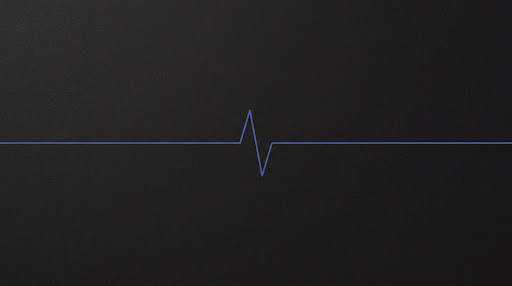
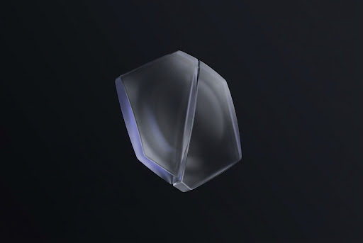
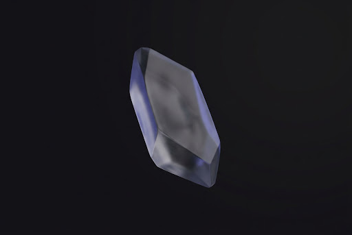
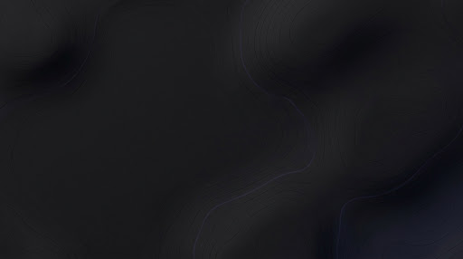
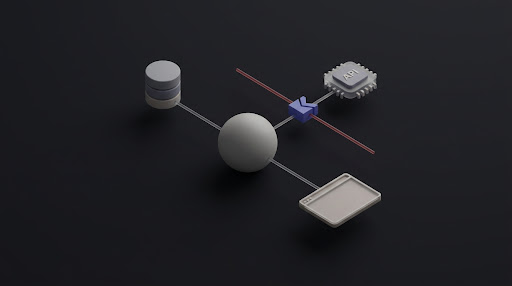
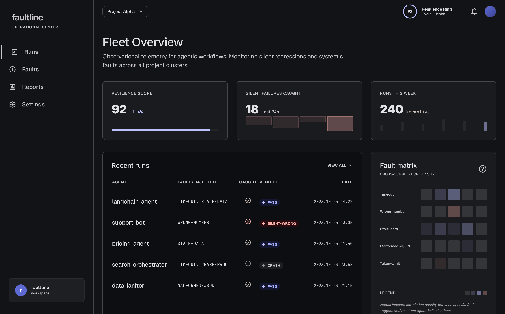
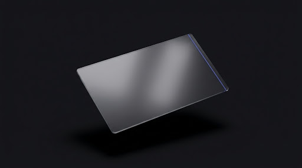
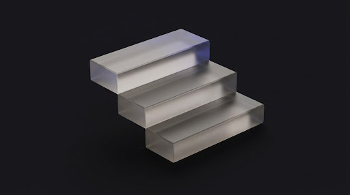

faultline breaks your agent's tools on purpose — wrong numbers, stale data, empty responses — and catches the moment it confidently ships a wrong answer with no error. Deterministically. No LLM judge.


Your tests check that the agent runs. They don't check that a tool quietly handed it a stale price, a truncated list, or a number off by a factor of ten — and that the agent acted on it anyway. No exception. No alert. Just a wrong action with a price tag.
Every mode injects realistic faults into your tools and watches what the agent does — then gates CI when it does the wrong thing.
Honest edge cases you define — the inputs you already worry about.
faultline probe suite.pyAuto-generated edge inputs: empty, null, bent numbers, dropped keys.
faultline fuzz suite.pyHard real-world situations the agent has to reason through.
faultline scenarios suite.pyRe-run a recorded trace and confirm the verdict still holds.
faultline replay run.jsonLearn invariants from good runs, then enforce them.
faultline mine suite.pyThe full fault library — timeouts, stale data, truncation, wrong numbers.
faultline run suite.pyDetection is behavioral, not a second model's opinion. The same fault produces the same verdict, so it gates CI without flaking.
The tool hangs. Your tests already see this — it throws.
get_quote() → TimeoutErrorA 500 comes back. Loud, logged, handled.
fetch() → 503The list comes back short. No error — the agent just sees fewer rows.
list_orders() → [3 of 240]An empty payload reads as "nothing found" instead of "lookup failed."
lookup() → nullYesterday's price returned as today's. 200 OK. Completely wrong.
get_price() → $41 (was $58)A quantity off by 10×. The agent orders on it without blinking.
qty: 2 → 240
faultline wraps every tool call, swaps the real response for a corrupted one, and compares what the agent does against what it should do — by your invariants, not a second model's opinion.

Resilience score, the runs that caught a silent-wrong, and a fault matrix across your agents — wired straight from your CI.


Self-authored, independently audited, zero labels overturned. Run it yourself →

A GitHub Action that fails the build the moment your agent silently mishandles a fault. Six modes, all gate CI.
The same checks, live. A seatbelt that blocks an irreversible action before it fires on rule-breaking data.
A tamper-evident report — edit one verdict and the hash breaks. Reproducible evidence an auditor can re-check.
Open source. Deterministic. Catches the bug your evals miss.